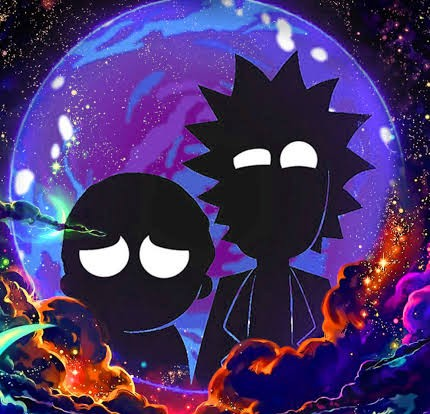

Buscar personagem
Dados do nome, status, espécie e imagem vêm da API pública Rick and Morty API.
Meus favoritos
página 1

busque personagens de Rick and Morty e monte a sua lista de favoritos
Dados do nome, status, espécie e imagem vêm da API pública Rick and Morty API.